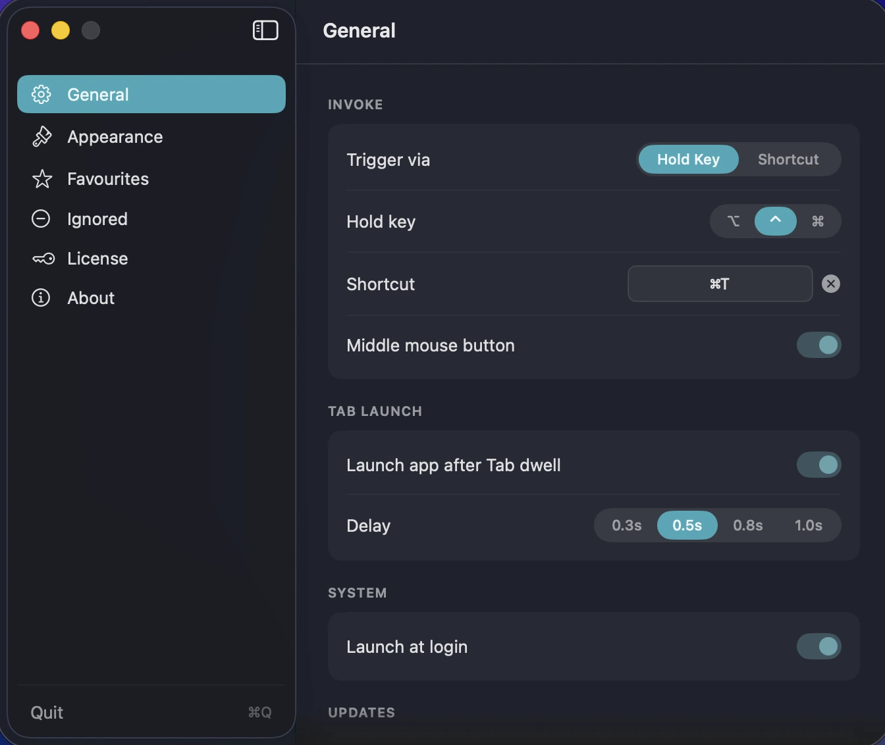
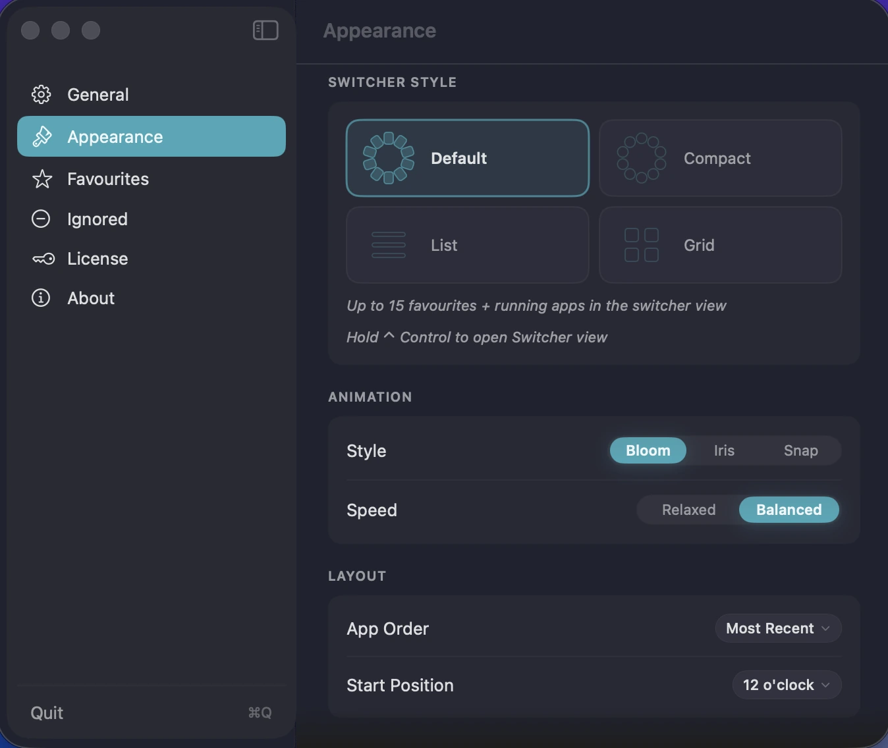
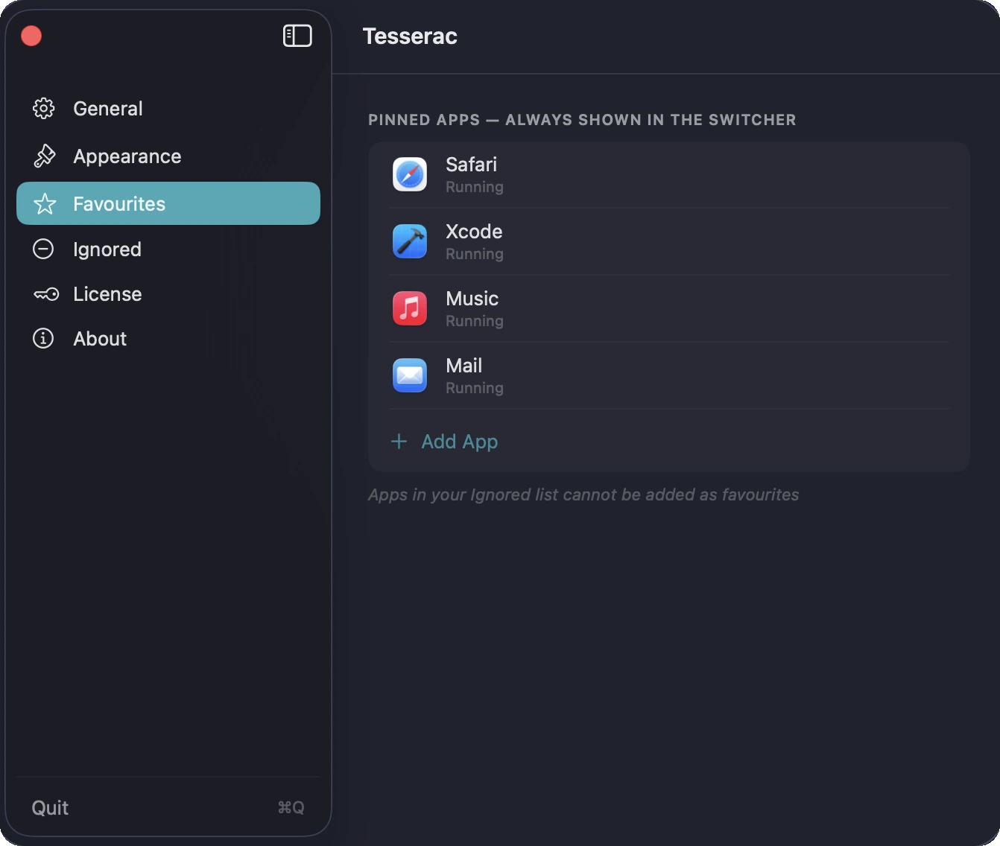
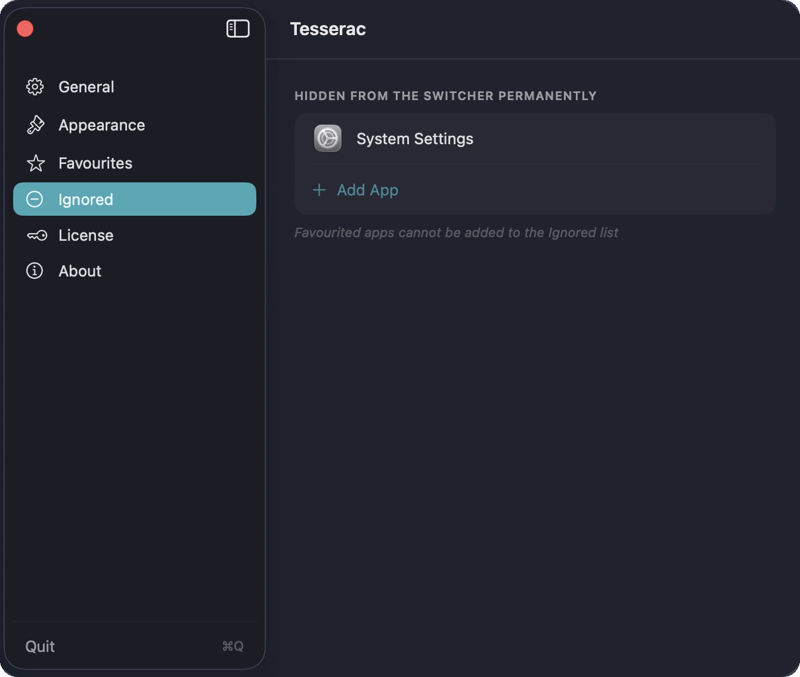

SPATIAL APP NAVIGATION
Tesserac
App switching, reimagined.
Switch between apps using immersive spatial layouts designed for speed, focus, and muscle memory — built for keyboard-driven workflows on macOS.
Switch apps spatially.
Hold a key to summon your apps around the screen center — glance, hover, release.
Choose your switching style.
Spatial Tile and Glass Orb layouts give Tesserac two distinct visual modes.
Built for speed.
Prefer precision? Switch instantly using a compact keyboard-first list layout.
See everything at once.
A clean grid layout for visual memory and rapid app selection.

Built around muscle memory.
Choose how Tesserac appears — from hold keys to custom shortcuts and instant invoke actions.

Layouts that adapt to how you think.
Choose between immersive spatial layouts, compact lists, and visual grids. Then tune the feel — pick Snap for instant switching, or Relaxed and Balanced for animation that breathes.

Keep your favourites close.
Pin the apps you reach for most — they'll always be in the switcher, running or not.

Cut the clutter.
Add apps to the Ignored list and they'll stay out of the switcher for good.
Core Features
Spatial Switching
Apps arranged around the screen instead of inside a flat strip.
Keyboard-First
Hold a modifier key or use a custom shortcut to switch instantly.
Multiple Layouts
Spatial Ring, Grid, and List layouts for different workflows.
Pinned Apps
Keep your most important apps permanently available in the switcher.
Strict Privacy
No analytics. No tracking. Everything is local and stays on your Mac.
One-Time Purchase
$6.99 once. No subscription. Lifetime access including all future updates.
Pricing
One price. Lifetime access.
One-time payment. No subscription. Get lifetime access to Tesserac on your Mac.
No subscription. No account required.
- 7-day free trial
- One-time payment
- Lifetime updates included
- Every feature unlocked from day one
- Native macOS app (Apple Silicon)
- Fully offline & private
Secure checkout via App Store (local pricing) or Lemon Squeezy (USD, powered by Stripe).
FAQ
What does Tesserac do?
Tesserac is a spatial app switcher for macOS. Instead of a flat Cmd+Tab strip, your running apps appear around the screen for faster, more visual switching.
How is it different from Cmd+Tab?
Cmd+Tab is a flat, linear strip that forces you to scan across a row. Tesserac arranges your apps around the screen center, making them instantly recognisable by position and spatial memory.
How do I open Tesserac?
You can choose Control, Option, or Command as your hold key. You can also set a custom keyboard shortcut (e.g. ⌘⇧Space) or use your middle mouse button.
Does Tesserac replace Cmd+Tab?
No. Tesserac works alongside macOS and does not modify the system app switcher.
Can I pin my favourite apps?
Yes — pin up to 15 apps to always appear in the ring, whether they're running or not. You can also add apps to an Ignored list to hide them permanently.
Is it Apple Silicon native?
Yes — native arm64 build. Runs on macOS 14 (Sonoma) or later.
Is it a subscription?
No. Tesserac is a one-time purchase available on the Mac App Store or as a direct download, with a 7-day free trial included.
Does Tesserac collect data?
No. Tesserac does not collect analytics, tracking data, or personal information.
From the Blog
The best Cmd+Tab alternatives for Mac — and why linear switching is broken
Cmd+Tab hasn't changed since 1984. We tried the main alternatives — AltTab, Contexts, Witch, Raycast — and mapped the trade-offs.
Menu bar system monitors on Mac: what to look for in 2026
A framework for evaluating menu-bar monitors on Apple Silicon, plus how the main options stack up.